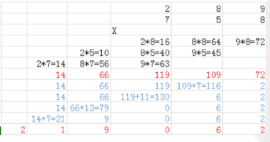

挑战字符串
无重复字符的最长子串
给定一个字符串，请你找出其中不含有重复字符的 最长子串 的长度。
示例 1:
1 | 输入: "abcabcbb" |
示例 2:
1 | 输入: "bbbbb" |
示例 3:
1 | 输入: "pwwkew" |
解法
首先是子串，所以连续的。一个滑动窗口，窗口内的都是没有重复的字符，我们需要尽可能的扩大窗口的大小。由于窗口在不停向右滑动，窗口的右边界就相当于遍历到的字符的位置。
为了求出窗口的大小，我们需要一个变量left来指向滑动窗口左边界，一个变量记录窗口的右边界如果该字符没有出现过就右边界增加，否则就移动左边界直到重复的字符去掉。
为了判断字符是否出现过把出现过的字符都放入set中，遇到set中没有的字符就加入set中并更新结果res，如果遇到重复的，则从左边开始删字符，直到删到重复的字符停止。
AC代码
1 | class Solution { |
最长公共前缀
最长公共前缀
编写一个函数来查找字符串数组中的最长公共前缀。
如果不存在公共前缀，返回空字符串 ""。
示例 1:
1 | 输入: ["flower","flow","flight"] |
示例 2:
1 | 输入: ["dog","racecar","car"] |
说明:
所有输入只包含小写字母 a-z 。
解法
按照题匹配就可以了。
AC代码
1 | class Solution { |
字符串的排列
给定两个字符串 s1 和 s2，写一个函数来判断 s2 是否包含 s1 的排列。
换句话说，第一个字符串的排列之一是第二个字符串的子串。
示例1:
1 | 输入: s1 = "ab" s2 = "eidbaooo" |
示例2:
1 | 输入: s1= "ab" s2 = "eidboaoo" |
说明：
- 输入的字符串只包含小写字母
- 两个字符串的长度都在 [1, 10,000] 之间
解法
开始想跑dfs 跑全排列，然后用KMP 去匹配，但是后来想了一下，不用那么复杂，因为全是小写字母，所以只需要s2 和s1 这段字符串的字符数量一样就可以了，
因为s1 的子串可以重新组合，必然能和s2 匹配成功
AC代码
1 | class Solution { |
字符串相乘
给定两个以字符串形式表示的非负整数 num1 和 num2，返回 num1 和 num2 的乘积，它们的乘积也表示为字符串形式。
示例 1:
1 | 输入: num1 = "2", num2 = "3" |
示例 2:
1 | 输入: num1 = "123", num2 = "456" |
说明：
num1和num2的长度小于110。num1和num2只包含数字0-9。num1和num2均不以零开头，除非是数字 0 本身。- 不能使用任何标准库的大数类型（比如
BigInteger）或直接将输入转换为整数来处理。
解法
模拟数字乘法。参照这个图理解一下代码就可以

AC代码
1 | class Solution { |
翻转字符串里的单词
给定一个字符串，逐个翻转字符串中的每个单词。
示例 1
1 | 输入: "the sky is blue" |
示例 2：
1 | 输入: " hello world! " |
示例 3：
1 | 输入: "a good example" |
解法
遍历这个字符串，按照题意我们采用stack 来存储这些字符串然后输出即可。
AC代码
1 | class Solution { |
简化路径
以 Unix 风格给出一个文件的绝对路径，你需要简化它。或者换句话说，将其转换为规范路径。
在 Unix 风格的文件系统中，一个点（.）表示当前目录本身；此外，两个点 （..） 表示将目录切换到上一级（指向父目录）；两者都可以是复杂相对路径的组成部分。更多信息请参阅：Linux / Unix中的绝对路径 vs 相对路径
请注意，返回的规范路径必须始终以斜杠 / 开头，并且两个目录名之间必须只有一个斜杠 /。最后一个目录名（如果存在）不能以 / 结尾。此外，规范路径必须是表示绝对路径的最短字符串。
示例 1：
1 | 输入："/home/" |
示例 2：
1 | 输入："/../" |
示例 3：
1 | 输入："/home//foo/" |
示例 4：
1 | 输入："/a/./b/../../c/" |
示例 5：
1 | 输入："/a/../../b/../c//.//" |
解法
模拟题，注意细节。
AC代码
1 | class Solution { |
复原IP地址
给定一个只包含数字的字符串，复原它并返回所有可能的 IP 地址格式。
示例：
1 | 输入: "25525511135" |
解法
分为四个数字，每个数字最多三位。
遍历出所有的情况可能，看是否满足需求。
AC代码
1 | public class Solution { |
数组和排序
三数之和
给定一个包含 n 个整数的数组 nums，判断 nums 中是否存在三个元素 a，b，c ，使得 a + b + c = 0 ？找出所有满足条件且不重复的三元组。
注意：答案中不可以包含重复的三元组。
1 | 例如, 给定数组 nums = [-1, 0, 1, 2, -1, -4]， |
解法
先将数组排序，使用i，j，k三个指针。i指向最小的数可能的位置，k指向最大的数的位置，j指向中间的数可能的位置。遍历原理核心为每次遍历会遇到得三种情况：
1.nums[i]+nums[j]==-nums[k]，此时说明刚好三数加一起等于0，于是此时要把j向右拨一位，但此时nums[i]+nums[j]变大了(nums[j]变大的情况下)，所以同时也要把k向左拨。也即此时i++，k--;
2.nums[i]+nums[j]>-nums[k]，此时说明nums[i]+nums[j]+nums[k]>0，所以k要向左拨，k--;
3.nums[i]+nums[j]<-nums[k]，此时说明nums[i]+nums[j]+nums[k]<0，所以j要向右拨，j++;
当然，遍历的时候肯定会考虑重复等一些的情况，所以要加上邻位判断。比如在遍历第一种情况时，如果nums[j]==nums[j-1]，说明此时j已经考虑过了，直接j++即可。AC代码
1 | class Solution { |
岛屿的最大面积
给定一个包含了一些 0 和 1的非空二维数组 grid , 一个 岛屿 是由四个方向 (水平或垂直) 的 1 (代表土地) 构成的组合。你可以假设二维矩阵的四个边缘都被水包围着。
找到给定的二维数组中最大的岛屿面积。(如果没有岛屿，则返回面积为0。)
示例 1:
1 | [[0,0,1,0,0,0,0,1,0,0,0,0,0], |
对于上面这个给定矩阵应返回 6。注意答案不应该是11，因为岛屿只能包含水平或垂直的四个方向的‘1’。
示例 2:
1 | [[0,0,0,0,0,0,0,0]] |
对于上面这个给定的矩阵, 返回 0。
注意: 给定的矩阵grid 的长度和宽度都不超过 50。
解法
bfs或者dfs均可，这种就是那种油田问题，但是这个只写函数感觉很难受写的。但是要注意n==0 的情况，这样算法题一定要注意判断边界。
AC代码
1 | class Solution { |
搜索旋转排序数组
假设按照升序排序的数组在预先未知的某个点上进行了旋转。
( 例如，数组 [0,1,2,4,5,6,7] 可能变为 [4,5,6,7,0,1,2] )。
搜索一个给定的目标值，如果数组中存在这个目标值，则返回它的索引，否则返回 -1 。
你可以假设数组中不存在重复的元素。
你的算法时间复杂度必须是 O(log n) 级别。
示例 1:
1 | 输入: nums = [4,5,6,7,0,1,2], target = 0 |
示例 2:
1 | 输入: nums = [4,5,6,7,0,1,2], target = 3 |
解法
二分搜索法的关键在于获得了中间数后，判断下面要搜索左半段还是右半段，多画几个示意图可以发现如果中间的数小于最右边的数，则右半段是有序的，若中间数大于最右边数，则左半段是有序的，我们只要在有序的半段里用首尾两个数组来判断目标值是否在这一区域内，这样就可以确定保留哪半边了。
AC代码
1 | class Solution { |
最长连续递增序列
给定一个未经排序的整数数组，找到最长且连续的的递增序列。
示例 1:
1 | 输入: [1,3,5,4,7] |
示例 2:
1 | 输入: [2,2,2,2,2] |
注意：数组长度不会超过10000。
解法
最长连续递增序列是 [1,3,5], 长度为3。
尽管[1,3,5,7]也是升序的子序列, 但它不是连续的，因为5和7在原数组里被4隔开。
最长连续递增子序列，解法就直接模拟，从1-n，要是a[i]<a[i+1],长度加一，碰到a[i]>=a[i+1]就更新最长的递增序列长度
AC代码
1 | class Solution { |
数组中的第K个最大元素
在未排序的数组中找到第 k 个最大的元素。请注意，你需要找的是数组排序后的第 k 个最大的元素，而不是第 k 个不同的元素。
示例 1:
1 | 输入: [3,2,1,5,6,4] 和 k = 2 |
示例 2:
1 | 输入: [3,2,3,1,2,4,5,5,6] 和 k = 4 |
说明:
你可以假设 k 总是有效的，且 1 ≤ k ≤ 数组的长度。
解法
维持一个长度为k 的优先队列即可。
AC代码
1 | class Solution { |
最长连续序列
给定一个未排序的整数数组，找出最长连续序列的长度。
要求算法的时间复杂度为 O(n)。
示例:
1 | 输入: [100, 4, 200, 1, 3, 2] |
解法
先排序，然后一遍循环找到最长连续的序列的长度
AC代码
1 | class Solution { |
第k个排列
给出集合 [1,2,3,…,*n*]，其所有元素共有 n! 种排列。
按大小顺序列出所有排列情况，并一一标记，当 n = 3 时, 所有排列如下：
"123""132""213""231""312""321"
给定 n 和 k，返回第 k 个排列。
说明：
- 给定 n 的范围是 [1, 9]。
- 给定 k 的范围是[1, n!]。
示例 1:
1 | 输入: n = 3, k = 3 |
示例 2:
1 | 输入: n = 4, k = 9 |
解法
先排序，然后一遍循环找到最长连续的序列的长度
AC代码
1 | class Solution { |
朋友圈
班上有 N 名学生。其中有些人是朋友，有些则不是。他们的友谊具有是传递性。如果已知 A 是 B 的朋友，B 是 C 的朋友，那么我们可以认为 A 也是 C 的朋友。所谓的朋友圈，是指所有朋友的集合。
给定一个 N * N 的矩阵 M，表示班级中学生之间的朋友关系。如果M[i][j] = 1，表示已知第 i 个和 j 个学生互为朋友关系，否则为不知道。你必须输出所有学生中的已知的朋友圈总数。
示例 1:
1 | 输入: |
示例 2:
1 | 输入: |
注意：
N在[1,200]的范围内。- 对于所有学生，有
M[i][i]= 1。 - 如果有
M[i][j] = 1，则有M[j][i]= 1。
解法
第一反应 并查集，但是也可以直接dfs，维持一个vis数组，对于走过的不再遍历，对于未走过的按照给定的ma[][]进行深度搜索。
AC代码
1 | class Solution { |
合并区间
给出一个区间的集合，请合并所有重叠的区间。
示例 1:
1 | 输入: [[1,3],[2,6],[8,10],[15,18]] |
示例 2:
1 | 输入: [[1,4],[4,5]] |
解法
我们首先想到的做法是先将输入的区间按照第一个元素排序。然后我们建立一个result用来存储最后的结果。我们现将第一个区间放入result中，然后对于后面输入的区间的item.start和result[-1].end比，如果result[-1].end < item.start，我们就将item加入到result，否则话说明要放入的区间和result[-1]有重叠，那么我们取result[-1].end = max(result[-1].end, item.end)。
AC代码
1 | /** |
接雨水
给定 n 个非负整数表示每个宽度为 1 的柱子的高度图，计算按此排列的柱子，下雨之后能接多少雨水。

上面是由数组 [0,1,0,2,1,0,1,3,2,1,2,1] 表示的高度图，在这种情况下，可以接 6 个单位的雨水（蓝色部分表示雨水）。 感谢 Marcos 贡献此图。
示例:
1 | 输入: [0,1,0,2,1,0,1,3,2,1,2,1] |
解法
找到最高的那个柱子，把数组分成两部分，对于两部分都已经确定了一个边界高度了，所以对剩余的每个柱子至于确定一边的边界高度值，就可以直接计算出能接的雨水了
AC代码
1 | class Solution { |
链表和树
合并两个有序链表
将两个有序链表合并为一个新的有序链表并返回。新链表是通过拼接给定的两个链表的所有节点组成的。
示例：
1 | 输入：1->2->4, 1->3->4 |
解法
同上两种思路一个是递归，一个是遍历。分别用Java和c++写的。
递归：
新建个链表，每次两个链表当中选一个小值复制过去，那么现在是不是就是合并两个链表（其中有一个已经赋值过去了，就是之前的.next，然后递归就可以了。
遍历：
新建一个链表，我们先把第一个值复制过去，然后当两个链表都存在的时候，谁值小就把谁链接到新链表后面然后后移一个，直到两个当中某一个为空了，最后把两个链表剩余的直接链接上去就可以了。
可以看剑指Offer解答，更全一点，这里只有c++版本的。
AC代码
1 | /** |
反转链表
反转一个单链表。
示例:
1 | 输入: 1->2->3->4->5->NULL |
解法
递归，先反转从第二个结点到最后一个结点的链表，然后再将头结点放到已反转链表的最后，函数返回新链表的头结点。
AC代码
1 | /** |
两数相加
给出两个 非空 的链表用来表示两个非负的整数。其中，它们各自的位数是按照 逆序 的方式存储的，并且它们的每个节点只能存储 一位 数字。
如果，我们将这两个数相加起来，则会返回一个新的链表来表示它们的和。
您可以假设除了数字 0 之外，这两个数都不会以 0 开头。
示例：
1 | 输入：(2 -> 4 -> 3) + (5 -> 6 -> 4) |
解法
按我们的正常的加法来进行运算，但是要保存进位。
AC代码
1 | /** |
排序链表
在 O(n log n) 时间复杂度和常数级空间复杂度下，对链表进行排序。
示例 1:
1 | 输入: 4->2->1->3 |
示例 2:
1 | 输入: -1->5->3->4->0 |
解法
利用之前学习的排序算法来写即可
AC代码
1 | /** |
环形链表 II
给定一个链表，返回链表开始入环的第一个节点。 如果链表无环，则返回 null。
为了表示给定链表中的环，我们使用整数 pos 来表示链表尾连接到链表中的位置（索引从 0 开始）。 如果 pos 是 -1，则在该链表中没有环。
说明：不允许修改给定的链表。
示例 1：
1 | 输入：head = [3,2,0,-4], pos = 1 |

示例 2：
1 | 输入：head = [1,2], pos = 0 |
解法
快慢指针，出现重复之后，慢指针返回到头结点，快指针继续，两者每次都走一步，直到相遇
AC代码
1 | /** |
相交链表
编写一个程序，找到两个单链表相交的起始节点。
如下面的两个链表：

在节点 c1 开始相交。
示例 1：

1 | 输入：intersectVal = 8, listA = [4,1,8,4,5], listB = [5,0,1,8,4,5], skipA = 2, skipB = 3 |
解法
同时遍历两个链表到尾部，同时记录两个链表的长度。若两个链表最后的一个节点相同，则两个链表相交。
有两个链表的长度后，我们就可以知道哪个链表长，设较长的链表长度为len1,短的链表长度为len2。 则先让较长的链表向后移动(len1-len2)个长度。然后开始从当前位置同时遍历两个链表，当遍历到的链表的节点相同时，则这个节点就是第一个相交的节点。
AC代码
1 | /** |
合并K个排序链表
合并 k 个排序链表，返回合并后的排序链表。请分析和描述算法的复杂度。
示例:
1 | 输入: |
解法
因为已经做过合并两个有序链表的，所以我们就需要两个两个的合并，直到合并到一个链表中去。
AC代码
1 | class Solution { |
二叉树的最近公共祖先
给定一个二叉树, 找到该树中两个指定节点的最近公共祖先。
示例 1:
1 | 输入: root = [3,5,1,6,2,0,8,null,null,7,4], p = 5, q = 1 |
解法
第一种情况：左子树和右子树均找没有p结点或者q结点；（这里特别需要注意，虽然题目上说了p结点和q结点必定都存在，但是递归的时候必须把所有情况都考虑进去，
因为题目给的条件是针对于整棵树，而递归会到局部，不一定都满足整体条件）
第二种情况：左子树上能找到，但是右子树上找不到，此时就应当直接返回左子树的查找结果；
第三种情况：右子树上能找到，但是左子树上找不到，此时就应当直接返回右子树的查找结果；
第四种情况：左右子树上均能找到，说明此时的p结点和q结点分居root结点两侧，此时就应当直接返回root结点
AC代码
1 | * Definition for a binary tree node. |
二叉树的锯齿形层次遍历
给定一个二叉树，返回其节点值的锯齿形层次遍历。（即先从左往右，再从右往左进行下一层遍历，以此类推，层与层之间交替进行）。
例如：
给定二叉树 [3,9,20,null,null,15,7],
1 | 3 |
返回锯齿形层次遍历如下：
1 | [ |
解法
其实就是层次遍历，只不过相邻每两层之间输出的顺序相反，所以就设置一个bool型的变量，每次判断是该从左往右，还是从右往在即可。然后每遍历一层，对这个bool型变量取反。
AC代码
1 | public class Solution { |
动态或贪心
买卖股票的最佳时机
给定一个数组，它的第 i 个元素是一支给定股票第 i 天的价格。
如果你最多只允许完成一笔交易（即买入和卖出一支股票），设计一个算法来计算你所能获取的最大利润。
注意你不能在买入股票前卖出股票。
示例 1:
1 | 输入: [7,1,5,3,6,4] |
示例 2:
1 | 输入: [7,6,4,3,1] |
解法
因为只能交易一次，所以要找出差值最大的那个。
AC代码
1 | class Solution { |
买卖股票的最佳时机II
给定一个数组，它的第 i 个元素是一支给定股票第 i 天的价格。
设计一个算法来计算你所能获取的最大利润。你可以尽可能地完成更多的交易（多次买卖一支股票）。
注意：你不能同时参与多笔交易（你必须在再次购买前出售掉之前的股票）。
示例 1:
1 | 输入: [7,1,5,3,6,4] |
示例 2:
1 | 输入: [1,2,3,4,5] |
解法
因为不限交易次数，那么遍历数组，只要隔天买卖能赚差价，就可以购买。
AC代码
1 | class Solution { |
最大正方形
在一个由 0 和 1 组成的二维矩阵内，找到只包含 1 的最大正方形，并返回其面积。
示例:
1 | 输入: |
解法
判断以某个点为正方形右下角时最大的正方形时，那它的上方，左方和左上方三个点也一定是某个正方形的右下角，否则该点为右下角的正方形最大就是它自己了。
我们知道，该点为右下角的正方形的最大边长，最多比它的上方，左方和左上方为右下角的正方形的边长多1，最好的情况是是它的上方，左方和左上方为右下角的正方形的大小都一样的，这样加上该点就可以构成一个更大的正方形。
但如果它的上方，左方和左上方为右下角的正方形的大小不一样，合起来就会缺了某个角落，这时候只能取那三个正方形中最小的正方形的边长加1了。
AC代码
1 | class Solution { |
最大子序和
给定一个整数数组 nums ，找到一个具有最大和的连续子数组（子数组最少包含一个元素），返回其最大和。
示例:
1 | 输入: [-2,1,-3,4,-1,2,1,-5,4], |
进阶:
如果你已经实现复杂度为 O(n) 的解法，尝试使用更为精妙的分治法求解。
解法
一个最大的子序和，我们从中间将这个序列分开，那么这个最大值有三种可能，这个最大值出现在左半边，或者出现在右半边，或者横跨中间。因此我们根据这个思想，在这个三个当中求解出最大值就可以了，同理对于左半边和右半边的最大值我们也是这么求解的。O(n）的解法可以去看我的剑指Offer：https://xiaorui2.github.io/2019/06/24/%E5%89%91%E6%8C%87Offer%E5%88%B7%E9%A2%98%EF%BC%88%E6%8C%81%E7%BB%AD%E6%9B%B4%E6%96%B0%EF%BC%89/#more
AC代码
1 | class Solution { |
三角形最小路径和
给定一个三角形，找出自顶向下的最小路径和。每一步只能移动到下一行中相邻的结点上。
例如，给定三角形：
1 | [ |
自顶向下的最小路径和为 11（即，2 + 3 + 5 + 1 = 11）。
说明：
如果你可以只使用 O(n) 的额外空间（n 为三角形的总行数）来解决这个问题，那么你的算法会很加分。
解法
基础dp，倒推。
AC代码
1 | class Solution { |
俄罗斯套娃信封问题
给定一些标记了宽度和高度的信封，宽度和高度以整数对形式 (w, h) 出现。当另一个信封的宽度和高度都比这个信封大的时候，这个信封就可以放进另一个信封里，如同俄罗斯套娃一样。
请计算最多能有多少个信封能组成一组“俄罗斯套娃”信封（即可以把一个信封放到另一个信封里面）。
说明:
不允许旋转信封。
示例:
1 | 输入: envelopes = [[5,4],[6,4],[6,7],[2,3]] |
解法
先按要求排好序吗，然后就是最长上升子序列的问题。
AC代码
1 | class Solution { |
数据结构
最小栈
设计一个支持 push，pop，top 操作，并能在常数时间内检索到最小元素的栈。
- push(x) – 将元素 x 推入栈中。
- pop() – 删除栈顶的元素。
- top() – 获取栈顶元素。
- getMin() – 检索栈中的最小元素。
示例:
1 | MinStack minStack = new MinStack(); |
解法
两个栈，一个正常存储，一个存储最小值，和剑指offer上的是一样的，更细节的可以去看一下。
AC代码
1 | class MinStack { |
LRU缓存机制
运用你所掌握的数据结构，设计和实现一个 LRU (最近最少使用) 缓存机制。它应该支持以下操作： 获取数据 get 和 写入数据 put 。
获取数据 get(key) - 如果密钥 (key) 存在于缓存中，则获取密钥的值（总是正数），否则返回 -1。
写入数据 put(key, value) - 如果密钥不存在，则写入其数据值。当缓存容量达到上限时，它应该在写入新数据之前删除最近最少使用的数据值，从而为新的数据值留出空间。
进阶:
你是否可以在 O(1) 时间复杂度内完成这两种操作？
示例:
1 | LRUCache cache = new LRUCache( 2 /* 缓存容量 */ ); |
解法
按题意的来嘛，用Map加Stack就可以解决了。
AC代码
1 | /** |
全 O(1) 的数据结构
实现一个数据结构支持以下操作：
- Inc(key) - 插入一个新的值为 1 的 key。或者使一个存在的 key 增加一，保证 key 不为空字符串。
- Dec(key) - 如果这个 key 的值是 1，那么把他从数据结构中移除掉。否者使一个存在的 key 值减一。如果这个 key 不存在，这个函数不做任何事情。key 保证不为空字符串。
- GetMaxKey() - 返回 key 中值最大的任意一个。如果没有元素存在，返回一个空字符串
""。 - GetMinKey() - 返回 key 中值最小的任意一个。如果没有元素存在，返回一个空字符串
""。
挑战：以 O(1) 的时间复杂度实现所有操作。
解法
待补